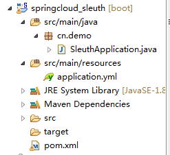
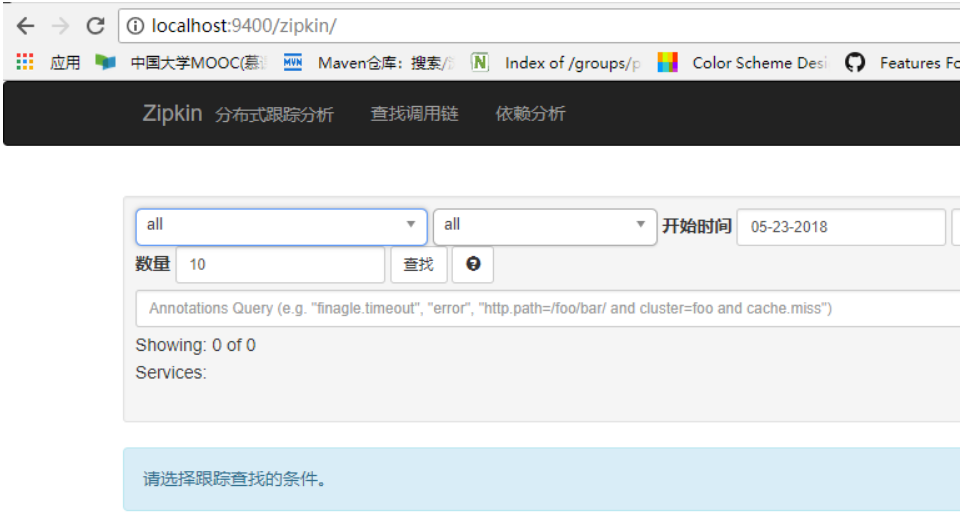
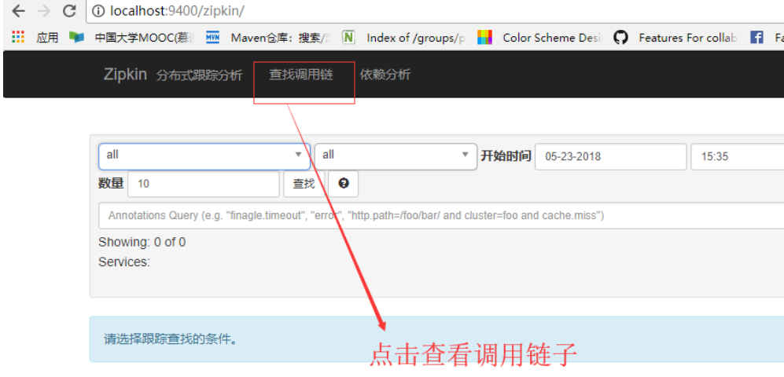
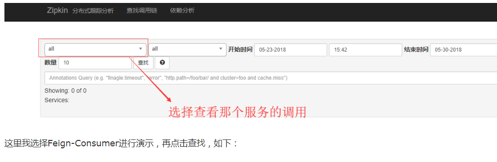
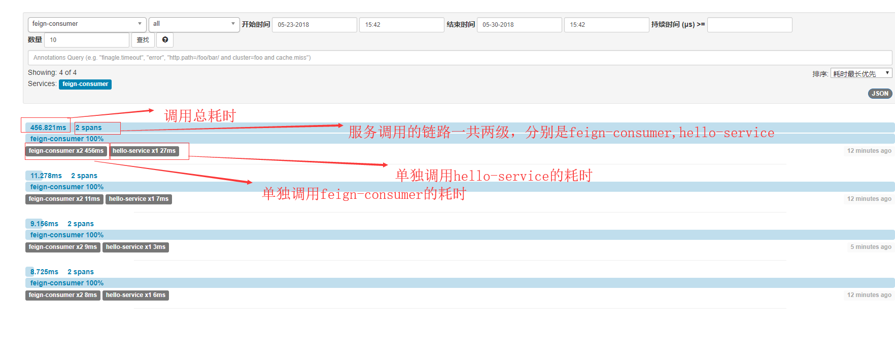
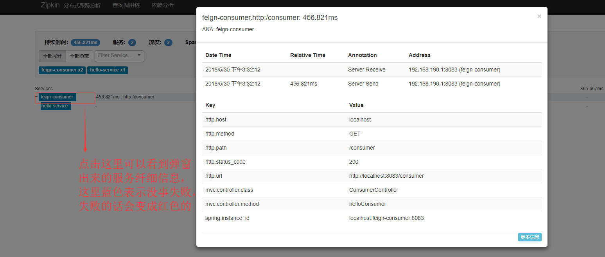
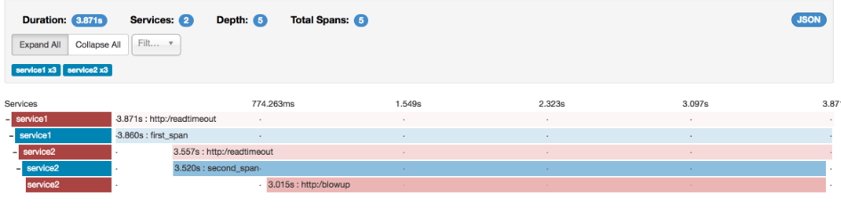

Spring-Cloud-Sleuth是Spring Cloud的组成部分之一，为SpringCloud应用实现了一种分布式追踪解决方案，其兼容了Zipkin, HTrace和log-based追踪,追踪微服务rest服务调用链路的问题，接触到zipkin，而spring cloud也提供了spring-cloud-sleuth来方便集成zipkin实现。
为什么需要进行分布式链路追踪springcloud-sleuth呢？
随着分布式系统越来越复杂，你的一个请求发过发过去，各个微服务之间的跳转，有可能某个请求某一天压力太大了，一个请求过去没响应，一个请求下去依赖了三四个服务，但是你去不知道哪一个服务出来问题，这时候我是不是需要对微服务进行追踪呀？监控一个请求的发起，从服务之间传递之间的过程，我最好记录一下，记录每一个的耗时多久，一旦出了问题，我们就可以针对性的进行优化，是要增加节点，减轻压力，还是服务继续拆分，让逻辑更加简单点呢？这时候springcloud-sleuth集成zipkin能帮我们解决这些服务追踪问题。
Span：基本工作单元，例如，在一个新建的span中发送一个RPC等同于发送一个回应请求给RPC，span通过一个64位ID唯一标识，trace以另一个64位ID表示，span还有其他数据信息，比如摘要、时间戳事件、关键值注释(tags)、span的ID、以及进度ID(通常是IP地址)
span在不断的启动和停止，同时记录了时间信息，当你创建了一个span，你必须在未来的某个时刻停止它。
Trace：一系列spans组成的一个树状结构，例如，如果你正在跑一个分布式大数据工程，你可能需要创建一个trace。
Annotation：用来及时记录一个事件的存在，用于定义请求的开始和停止的一些核心注释是：
1.cs- Client Sent -客户端发起一个请求，这个annotion描述了这个span的开始
2.sr- Server Received -服务端获得请求并准备开始处理它，如果将其sr减去cs时间戳便可得到网络延迟
3.ss- Server Sent -注解表明请求处理的完成(当请求返回客户端)，如果ss减去sr时间戳便可得到服务端需要的处理请求时间
4.cr- Client Received -表明span的结束，客户端成功接收到服务端的回复，如果cr减去cs时间戳便可得到客户端从服务端获取回复的所有所需时间
接下来，进行spring-cloud-sleuth来方便集成zipkin实现的演示如下：
首先我们在先前文章的两个服务提供者provider1，provider2，Feign模块，都需要引入如下依赖：
<dependency>
<groupId>org.springframework.cloud</groupId>
<artifactId>spring-cloud-sleuth-zipkin</artifactId>
<version>1.3.0.RELEASE</version>
</dependency>
<dependency>
<groupId>org.springframework.cloud</groupId>
<artifactId>spring-cloud-starter-sleuth</artifactId>
<version>1.3.0.RELEASE</version>
</dependency>这里还要说明一下，这里要provider1和provider2模块和Feign模块注意springcloud的版本号的匹配，如果不跟换的话，会启动不起来的，更换后的版本如下:
<dependencyManagement>
<dependencies>
<dependency>
<groupId>org.springframework.cloud</groupId>
<artifactId>spring-cloud-dependencies</artifactId>
<version>Dalston SR4</version>
<type>pom</type>
<scope>import</scope>
</dependency>
</dependencies>
</dependencyManagement>接着进行进行provider1的配置进行修改，如下：
(接着进行provider2模块的配置文件进行修改，只需要把server.port:8081改成8082：)
#端口号
server:
port: 8011
#Eureka实例名，集群中根据这里相互识别
spring:
application:
name: user-service
zipkin:
base-url: http://localhost:9400
enabled: true
#服务跟踪消息收集率，1代表每一条都收集，0.1代表收集百分之10，如果不配置，有个默认的百分比的
# sleuth:
# sampler:
# percentage: 0.3
eureka:
#客户端
client:
#注册中心地址
service-url:
defaultZone: http://localhost:8001/eureka/Feign模块的配置修改如下：
server:
port: 8083
spring:
application:
name: feign-consumer
zipkin:
base-url: http://localhost:9400
enabled: true
eureka:
client:
service-url:
defaultZone: http://localhost:8001/eureka/
hystrix:
command:
default:
execution:
isolation:
thread:
timeoutinMilliseconds: 5000
ribbon:
connectTimeout: 500新建一个子模块叫做springcloud-sleuth模块，如下图：

pom要引入的依赖如下：
<parent>
<groupId>org.springframework.boot</groupId>
<artifactId>spring-boot-starter-parent</artifactId>
<version>1.5.12.RELEASE</version>
<relativePath/> <!-- lookup parent from repository -->
</parent>
<properties>
<project.build.sourceEncoding>UTF-8</project.build.sourceEncoding>
<project.reporting.outputEncoding>UTF-8</project.reporting.outputEncoding>
<java.version>1.8</java.version>
<spring-cloud.version>Dalston.SR5</spring-cloud.version>
</properties>
<dependencies>
<dependency>
<groupId>io.zipkin.java</groupId>
<artifactId>zipkin-server</artifactId>
<version>2.4.0</version>
</dependency>
<dependency>
<groupId>io.zipkin.java</groupId>
<artifactId>zipkin-autoconfigure-ui</artifactId>
<version>2.4.0</version>
</dependency>
<dependency>
<groupId>org.springframework.cloud</groupId>
<artifactId>spring-cloud-starter-eureka-server</artifactId>
</dependency>
<dependency>
<groupId>org.springframework.boot</groupId>
<artifactId>spring-boot-starter-web</artifactId>
</dependency>
<dependency>
<groupId>org.springframework.cloud</groupId>
<artifactId>spring-cloud-starter-eureka</artifactId>
</dependency>
<dependency>
<groupId>org.springframework.boot</groupId>
<artifactId>spring-boot-starter-test</artifactId>
<scope>test</scope>
</dependency>
</dependencies>
<dependencyManagement>
<dependencies>
<dependency>
<groupId>org.springframework.cloud</groupId>
<artifactId>spring-cloud-dependencies</artifactId>
<version>${spring-cloud.version}</version>
<type>pom</type>
<scope>import</scope>
</dependency>
</dependencies>
</dependencyManagement>
<build>
<plugins>
<plugin>
<groupId>org.springframework.boot</groupId>
<artifactId>spring-boot-maven-plugin</artifactId>
</plugin>
</plugins>
</build>
</project>Sleuth模块的配置文件如下：
server:
port: 9400
spring:
application:
name: zipkin-serverSleuth模块启动类如下：
@SpringBootApplication
@EnableZipkinServer
public class SleuthApplication {
public static void main(String[] args) {
SpringApplication.run(SleuthApplication.class, args);
}
}接着分别启动两个Eureka注册中心，两个provider1,provider2模块，1个Feign模块，1个Sleuth模块，如下图：
首先进入Sleuth和zipkin整合后的链路跟踪图形化界面如下图所视：

接着在通过Feign去显示调用两个provider1和provider2模块的服务，http://localhost:8083/hello?name=8889999999 多按几次F5，进行多次请求，因为服务跟踪消息是有收集率，1代表每一条都收集，0.1代表收集百分之10，如果不配置，有个默认的百分比的，因此需要多次请求，确保被跟踪消息能被收集到。如下：
接着去ZipKin控制台进行查看链路调用，如下：


 比如feign-consumer 100%而且有蓝色的横条包裹表示调用成功率，红色横条包裹表示失败，出现异常错误。
再点击其中一个调用服务，进入可以看到详细信息，如下：

Zipkin允许您可视化跟踪中的错误。当异常被抛出并且没有被捕获时，我们在Zipkin可以正确着色的跨度上设置适当的标签。您可以在痕迹列表中看到一条是红色的痕迹。这是因为抛出了一个异常。
如果您点击该轨迹，您将看到类似的图片：
